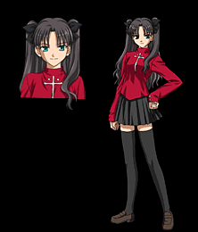

Тосака Рин (яп. 遠坂 凛)

Девушка из параллельного класса Широ. Представительница потомственной династии магов, участвовавшей в каждой войне, начиная с самой первой. Рин решительно настроена на участие в войне и готовится призвать Сэйбер, но по ошибке призывает вместо неё Арчера, что путает все её планы. Сперва, встретив Широ, видит в нем врага, но со временем, становится его надёжной союзницей и другом.
Слуга
Назад